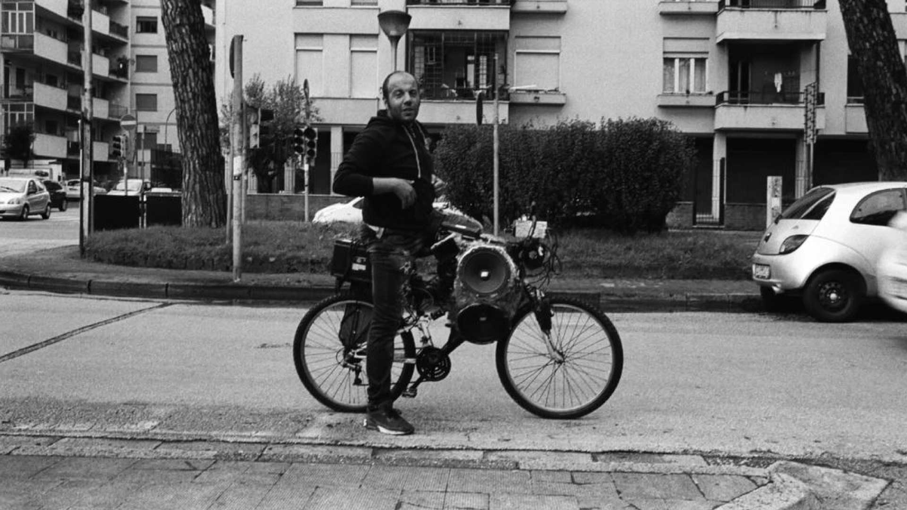
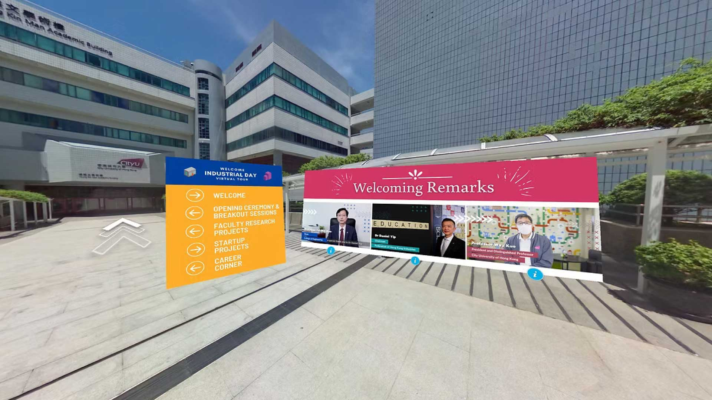
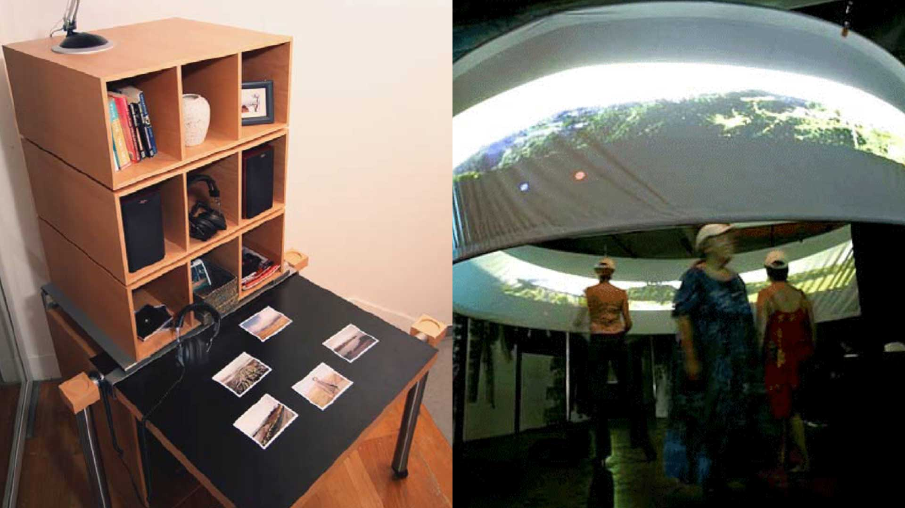
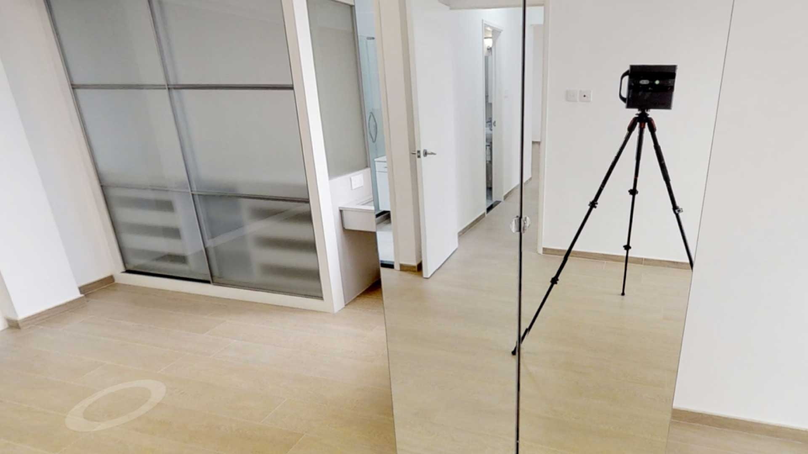
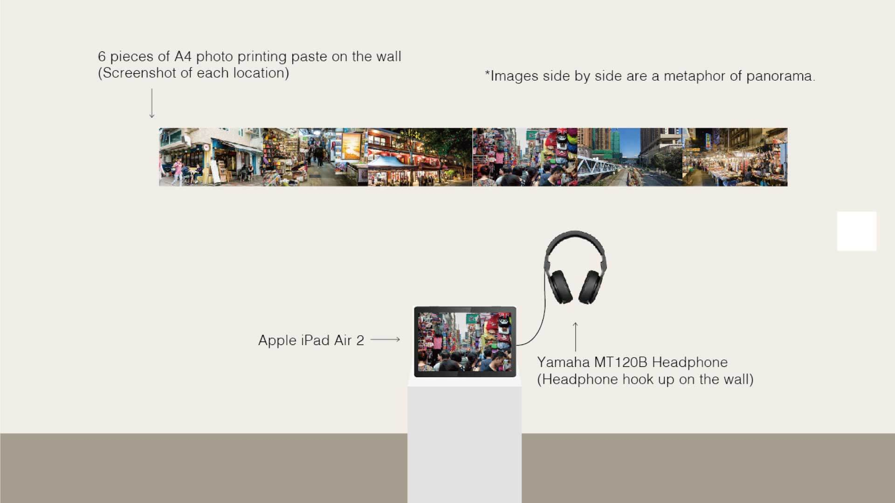
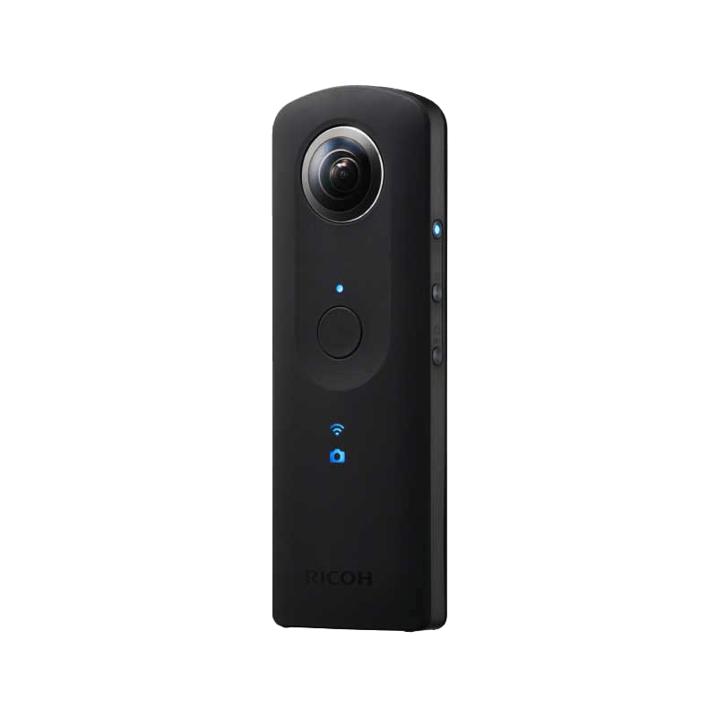
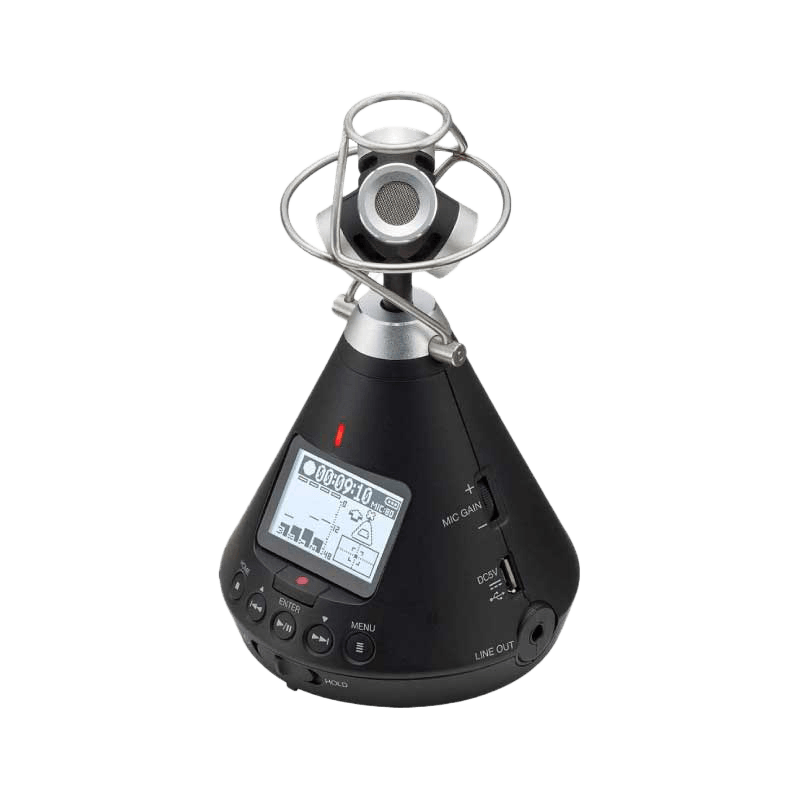
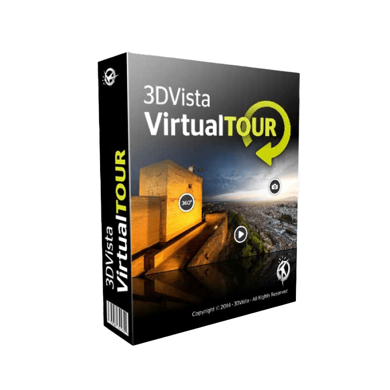
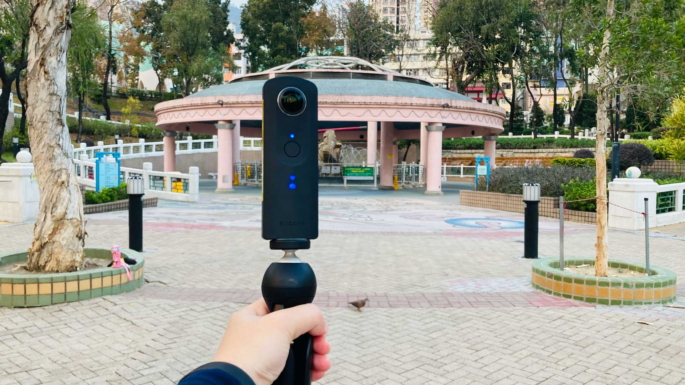
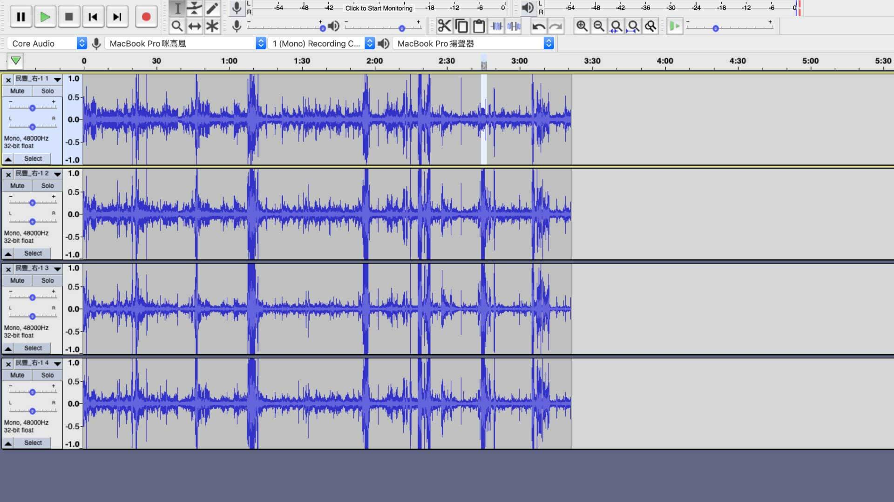

Urban Watcher
An immersive and interactive VR installation that encourages viewers to re-examine transient, everyday local environments in Hong Kong that may unexpectedly disappear.

Overview
Designed as an immersive, first-person experience, this interactive artwork encourages audiences to reconsider familiar surroundings that are at risk of disappearing. The project unfolds across sites selected for their unique character, historical significance, and emotional resonance within the community.
By transforming viewers into active participants, the piece emphasizes the importance of recognizing and valuing the transient aspects of our physical world.
- Type
- Graduation Project
- Category
- VR, Interactive
- Tools
- RICOH THETA S camera, Zoom H3-VR audio recorder, 3DVista Virtual Tour software
- Deliverables
- Immersive VR installation, field documentation, spatial experience
- Location
- Hong Kong
Focus
The work sits at the intersection of documentary photography, spatial sound, and interactive VR — turning passive observation into presence.
Immersion
Move beyond tablet screens into a first-person spatial experience that feels inhabited, not watched.
Place & memory
Document local environments that may vanish — and give them a lasting, shareable form.
Sound as place
Pair 360 imagery with spatial audio so locations feel alive, not static panoramas.
Participation
Invite viewers to navigate, linger, and choose — making them co-authors of the encounter.
Artist Statement
When I first became absorbed in photography, Hong Kong’s landscapes deeply impressed me. At that time, I had little interest in the cityscape itself. Influenced by many different factors, I began shooting between buildings, along streets and alleys, and through residential estates — trying to capture the city’s rhythm. Slowly, I realized there is so much in Hong Kong worth preserving on camera. No matter people’s routines or daily behaviors, the city always carries vitality and spirit. To me, these are the beauty elements that come together within the urban environment.
Living in a fast-paced life shaped by technology, we often overlook the unique human touch. During the social movements and the pandemic, many of our lives were disrupted, and most people were forced to stay in Hong Kong. At the same time, we began to rediscover the city’s history and beauty. This inspired me to create an artwork connected to the Hong Kong I grew up with.
To capture the most authentic scenes, this artwork focuses on the moment as something experienced through imagery, sound, and space. Designed as immersive and interactive art, it invites the audience to become participants — exploring from a first-person perspective. The location I chose is based on the place’s characteristics, local landmarks, historical architecture, and shared collective memories. Now it’s your turn to observe, reflect, and let the work spark feelings and responses.
Inspiration
Artists working at the intersection of image, sound, and place — practices that informed the direction of this work.
Mario Cipriano
Mario Cipriano, an Italian photographer, created “Light Sound Light” using four short videos that combine images with shutter sounds. He records location audio with a microphone before shooting on his Leica M6. Black frames play five seconds of audio; photos follow with more sound, each lasting ten seconds.

Stuart Fowkes
Stuart Fowkes collaborated with sound artists to collect images from over 75 countries through 500 contributors. He organizes them in a database, and sound designers select images to form a soundtrack. The result is a sound map blending media, prompting reflection on memory, consciousness, and storytelling.

CENG Industrial Day
This virtual tour, created by City University of Hong Kong for Industrial Day 2020, introduces the facility and its projects. It includes Zoom chat, a promotional video, and an information window for newcomers. Built with 3DVista VT Pro, it offers useful reference despite lacking background music.

Field Research
The field trip evaluated site feasibility. Locations were subject to adjustment based on assessment, and the final schedule superseded the initial itinerary. Sites were chosen for character, historical weight, and emotional resonance within the community.
Consultation
Three meetings with advisor Adam Tam shaped the direction of the work. His feedback pushed deeper imagery and sound research, documented in detailed notes.
A key breakthrough came in the second session, focused on technical design: rather than leaving the audience as passive viewers on tablets, we explored building a truly immersive experience through virtual reality concepts.

The advisor encouraged me to consider how to attract people to view my work. He emphasized that the artwork should be engaging and aligned with current trends, while still demonstrating strong technical capability and interactive elements. I should first evaluate whether my work can capture attention. Next, I need to define its key features and uniqueness. Finally, I should determine what content, scenes, and locations to document in order to achieve the intended characteristics.

The advisor recommended that I study how the property company markets and presents the estate online. He noted that VR technology has matured in recent years, and many property companies now use VR media to help prospective tenants explore apartments without visiting in person. By using a 360-degree camera to capture images throughout the apartment, viewers can examine all areas and details through a virtual tour.
The advisor also suggested I learn how to operate the camera and how VR systems work. He further referenced an immersive installation of ancient Chinese Buddhist cave paintings at SCM in 2012, using virtual reality to fully immerse audiences. Overall, he advised that my artwork should focus on immersive art and interaction rather than installation.

The advisor noted that Google Maps Street View is already well developed, so it may not be the best platform to present my work. Instead, I am more familiar with using the RICOH THETA application and app for editing and post-production.
To improve engagement, I will use content checkpoints to guide viewers through the tour (A, B, C, and D). Viewers will complete the virtual experience by visiting every checkpoint. In addition, the audio is designed with a main soundtrack plus independent audio tracks. The main soundtrack serves as background audio, and when viewers approach a checkpoint, the corresponding independent track will play louder.
Equipment
Key equipment was secured through the school: a RICOH THETA S camera, a Zoom H3-VR audio recorder, and a 3DVista Virtual Tour software license.
RICOH THETA S
The school provides the 360° camera. The RICOH THETA S supports high-resolution full HD video recording. Its LED indicator enables quick status checks at a glance, and it transfers images to a phone via Wi‑Fi at high speed. For photos, it offers a large format (5376 × 2688) and a medium format (2048 × 1024); the large format will be used. Weighing approximately 125 g, the camera is highly portable for capturing a variety of scenes. Its design and minimal controls also enhance usability.

Zoom H3-VR Audio Recorder
This recorder is designed for professional 360-audio capture and is well suited for use with a 360-degree camera. It records and processes spatial audio for VR, AR, and mixed-reality experiences. The H3-VR supports precise 360-degree VR audio recording up to 24-bit/96 kHz, and it can also capture stereo binaural WAV files up to 24-bit/48 kHz. Its distinctive conical design is engineered to capture sound from multiple angles.

3DVista Virtual Tour
This software enables the creation of interactive 360-degree virtual tours. It includes features such as embedded audio, videos, and photos, hotspots, floor plans, and fully customizable frames. It can also be accessed on a tablet without installation or required plugins, and it supports offline use. Since Wi‑Fi connectivity at school can be unstable, an offline virtual tour offers a more reliable viewing experience for audiences at any time. The software costs €499, so I will use the 30-day trial version. All post-production must be completed within one month, making scheduling and workload planning the most challenging part of the project.

Production
Images were retouched and audio noise reduction applied. Processed media was then imported into the software to assemble the virtual tour.

Some interesting observations and experiences occur “Behind the Scenes.” I document it in text.
When I arrived at Man Fung, staff were busy and customers were arriving gradually. I asked the boss for permission and she agreed, requesting that I not photograph staff faces. I felt nervous as customers watched and staff worked nearby. After finishing my work, I asked for a portrait photo, and the boss chatted with me while making dumplings.
When I arrived at Grandma’s tofu pudding shop in the afternoon, the staff were working continuously. I had visited before and asked permission, so one staff member recognized me. Customers came in for seating and were curious about my work. Many ordered tofu pudding and soy milk during filming. The staff remained focused on their duties. After the shoot, the shop was completely sold out, confirming the brand’s popularity.

Selecting the best photo is the most challenging part, and it depends on overall exposure, composition, and content. Exposure is critical for viewers to understand the real scene and feel present. Sunlight, surrounding elements, and passers-by are difficult to control. I often use a faster shutter speed on sunny days, but strong contrast creates deep shadows and reduces detail. A slower shutter can overexpose the sky, so I balance shutter speed and contrast. Composition and content help express my focus, and I usually photograph people to capture decisive, truthful moments.
I used the blur tool to protect privacy by blurring people’s faces, license plates, and brand names. With the exception of Man Fung, Chu Kei, Grandma’s tofu pudding, and Sing Heung Yuen, all other identifying details were hidden. This produced the final ready-to-use images for the virtual tour. Before building the tour, I inserted the images into the RICOH THETA app for preview of spherical views.

Each soundtrack is unique, so I select the best audio based on the corresponding image. I consider whether the sound provides important information that enhances understanding, how much wind noise it contains, whether the audio synchronizes with the sound sources in the scene, and whether the recording position matches the location shown in the image.
After evaluation, I listen carefully and trim sections where wind noise is prominent. I then use a noise-reduction function to reduce unwanted sounds. This process is repeated for every soundtrack to ensure consistency. Each track is recorded for about 3 minutes and 21 seconds to provide sufficient material for editing.
Capture
- 360° stills on site
- Spatial audio recording
- Location notes & references
Craft
- Image retouching
- Audio noise reduction
- Media sync & sequencing
Build
- 3DVista tour assembly
- Hotspots & navigation
- Exhibit packaging
Outcome
Showcased on a tablet at the SCM exhibit, the project came to life alongside free collectible postcards for attendees — extending the experience beyond the screen.